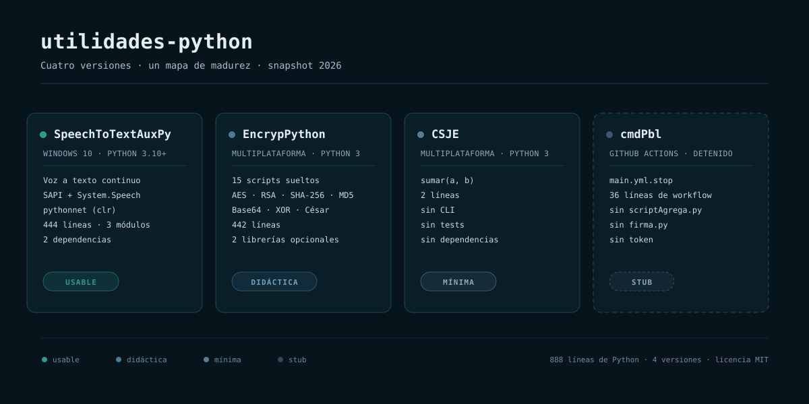

Cuatro herramientas.
Cuatro etapas.
Voz a texto, criptografía, una suma mínima y un stub: el mapa completo de utilidades.

Qué es y por qué existe
Colección de cuatro utilidades independientes en Python, conservadas como instantánea de experimentos: dictado por voz con SAPI en Windows, scripts didácticos de criptografía, una función mínima de suma y un esqueleto de automatización para un repositorio privado. Solo SpeechToTextAuxPy está publicado; las demás se solicitan.
El interés está en el contraste entre una herramienta usable y varios ejercicios con fallos conocidos. SpeechToTextAuxPy funciona en Windows 10 con pythonnet y el motor de voz del sistema, sin guardar audio ni elegir dispositivo. Los scripts de cifrado, en cambio, documentan errores de derivación de claves y de padding que el README expone sin corregir, lo que convierte al repositorio en un caso de estudio sobre límites y deuda técnica.
Documentación preservada
El README original, completo y en su contexto.
Cuatro utilidades Python de madurez muy distinta, documentadas con el mismo nivel de detalle y distinto nivel de promesa.
SpeechToTextAuxPy · EncrypPython · CSJE · cmdPbl
Naturaleza de este repositorio. Es un snapshot de portfolio: reúne cuatro versiones importadas desde repositorios independientes (
jmadasme/SpeechToTextAuxPy,jmadasme/EncrypPython,jmadasme/CSJE,jmadasme/cmdPbl). No es un paquete instalable, no es una librería unificada y no hay unsetup.pyni unpyproject.tomlque lo integre. Es un archivo de versiones con documentación transversal, pensado para que quien lo lea entienda qué hay dentro, qué sirve y qué no.
| Campo | Valor |
|---|---|
| Nombre | utilidades-python |
| Tipo | Colección de versiones (monorepo de archivo) |
| Lenguaje | Python 3 (una versión requiere Windows) |
| Versiones incluidas | 4 |
| Scripts Python | 19 archivos (15 cripto + 3 voz + 1 sumador) |
| Líneas de Python | ≈ 888 |
| Dependencias externas | pythonnet, colorama (solo SpeechToTextAuxPy) |
| Estado | Archivo / documentación. Una utilidad usable, una didáctica, una mínima, una vacía |
| Licencia | MIT |
| Autor | jmadasme |
| Año | 2026 |
Tabla de contenidos
- Qué es este repositorio
- Mapa de utilidades
- Requisitos e instalación
- SpeechToTextAuxPy — voz a texto
- EncrypPython — criptografía y codificación
- CSJE — sumador mínimo
- cmdPbl — stub
- Interfaces y conexiones
- Ejemplos de uso realistas
- Calibración
- Estado de madurez y límites
- Seguridad
- Solución de problemas
- Diagrama de conexión
- Estructura del repositorio
- Licencia y autor
- Referencias
Modelo de acceso
La primera versión (SpeechToTextAuxPy) es pública y gratuita: es el punto de partida para entender el proyecto, probarlo y construir sobre él. Las 3 versiones restantes son privadas y se comparten solo mediante solicitud.
Alcance del repositorio público: solo está incluida
versions/SpeechToTextAuxPy. Las rutas a otras versiones se mencionan como referencia histórica y no forman parte de este repositorio; se comparten por solicitud.Última versión: privada. Las mejoras, optimizaciones, depuraciones y variantes de hardware no se entregan de forma anónima: se solicitan y se acuerdan con un alcance claro.
| Versión | Acceso | Enlace |
|---|---|---|
SpeechToTextAuxPy |
Pública | Ver carpeta |
EncrypPython |
Privada | Solicitar acceso |
CSJE |
Privada | Solicitar acceso |
cmdPbl |
Privada | Solicitar acceso |
La licencia MIT de este repositorio se aplica únicamente a la primera versión pública. Las versiones privadas se rigen por el acuerdo de acceso correspondiente.
1. Qué es este repositorio
1.1 La idea
Con los años, un mismo autor acumula carpetas de código que resolvieron un problema puntual y después quedaron quietas. Este repositorio las ordena bajo un techo común, sin reescribirlas y sin fingir que son un producto. Cada carpeta dentro de versions/ conserva el contenido original de la versión, con su propio VERSION.md que declara de dónde vino.
La documentación es transversal: explica las cuatro juntas y dice cuál se puede usar hoy.
1.2 Lo que vas a encontrar
Cuatro piezas con niveles de madurez radicalmente distintos:
| Utilidad | Qué es realmente | Madurez |
|---|---|---|
| SpeechToTextAuxPy | Transcripción de voz continua en español desde la entrada de audio de Windows, usando SAPI vía pythonnet |
Usable en Windows 10 con el paquete de voz instalado |
| EncrypPython | Quince scripts sueltos de criptografía y codificación, cada uno con su demo al final | Didáctica: enseña conceptos, no protege nada |
| CSJE | Dos líneas que suman dos números | Mínima: un ejercicio, no una herramienta |
| cmdPbl | Un workflow de GitHub Actions detenido (.stop) y nada más |
Stub: no ejecuta, no se puede ejecutar |
1.3 Lo que este repositorio NO es
- No es una suite de criptografía. Ver §12. Varios algoritmos son obsoletos por diseño y otros tienen fallas de implementación documentadas más abajo.
- No es un paquete. No hay
pip install utilidades-python. Se usa copiando el script o importándolo con la ruta a mano. - No es multiplataforma uniforme. SpeechToTextAuxPy es Windows. El resto es Python puro.
- No tiene tests ni API estable. No hay
pytest, nitox, ni CI activo, y ningún nombre de función está congelado.
2. Mapa de utilidades
2.1 Vista general
utilidades-python/
│
├── versions/
│ ├── SpeechToTextAuxPy/ ← usable · Windows · 444 líneas
│ │ ├── src/ main.py · sapi_engine.py · console_utils.py
│ │ ├── requirements.txt pythonnet>=3.0.0 · colorama>=0.4.6
│ │ ├── run.bat lanzador con chcp 65001
│ │ └── docs/ datasheet.md · desarrollador.md
│ │
│ ├── EncrypPython/ ← didáctica · multiplataforma · 442 líneas
│ │ └── 15 scripts _*.py un algoritmo por archivo
│ │
│ ├── CSJE/ ← mínima · 2 líneas
│ │ └── sumador.py
│ │
│ └── cmdPbl/ ← stub · 1 workflow detenido
│ └── .github/workflows/main.yml.stop
│
├── docs/ ← documentación transversal (esta)
│ ├── datasheet.md
│ ├── developer.md
│ ├── REFERENCES.md
│ ├── BITACORA.md
│ └── assets/ 3 diagramas SVG
│
├── README.md ← este archivo
└── LICENSE MIT · 2026 · jmadasme
2.2 Matriz de decisión
| Si querés… | Usá | Advertencia |
|---|---|---|
| Transcribir voz a texto en Windows | SpeechToTextAuxPy |
Requiere paquete de voz es-ES y pythonnet |
| Entender el cifrado César | EncrypPython/_cesar.py |
Solo letras ASCII sin acentos |
| Calcular un SHA-256 de un texto | EncrypPython/_sha256.py |
Solo strings, no archivos |
| Cifrar un dato real | Ninguno | Usá cryptography con AES-GCM y gestión de claves propia |
| Sumar dos números | CSJE/sumador.py |
Es literalmente a + b |
| Automatizar con GitHub Actions | Ninguno | cmdPbl está detenido y le faltan scripts |
2.3 Comparación técnica
| Dimensión | SpeechToTextAuxPy | EncrypPython | CSJE | cmdPbl |
|---|---|---|---|---|
| Plataforma | Windows 10 | Cualquiera | Cualquiera | GitHub Actions |
| Dependencias externas | 2 | 2 opcionales (pycryptodome, cryptography) |
0 | 0 (usa actions) |
| Entrada | Audio del dispositivo predeterminado | Datos hardcodeados en cada script | 2 argumentos | Repositorio externo |
| Salida | Consola (stdout / stderr) |
Consola | Valor de retorno | Archivos + commit |
| Interfaz | CLI interactiva | Script ejecutable | Función importable | Workflow |
| Persistencia | Ninguna | Ninguna | Ninguna | Git (si corriera) |
| Manejo de errores | 3 códigos de salida | Ninguno | Ninguno | N/A |
| Documentación propia | Sí (docs/) |
Solo VERSION.md |
README vacío | Solo VERSION.md |
3. Requisitos e instalación
3.1 Lo primero: ¿necesitás instalar algo?
Solo SpeechToTextAuxPy tiene dependencias externas y solo corre en Windows. Si vas a mirar EncrypPython, CSJE o cmdPbl, no hace falta instalar nada: son scripts de biblioteca estándar (salvo tres de cripto que necesitan pycryptodome o cryptography).
| Utilidad | ¿Necesita pip install? |
|---|---|
| SpeechToTextAuxPy | Sí — pythonnet, colorama |
| EncrypPython (11 de 15 scripts) | No — solo hashlib, base64, binascii, random, string |
EncrypPython (_aes.py, _rsa.py) |
Sí — pycryptodome |
EncrypPython (_AES-256.py) |
Sí — cryptography |
| CSJE | No |
| cmdPbl | No |
3.2 Entorno virtual e instalación
Las dependencias de SpeechToTextAuxPy están declaradas en versions/SpeechToTextAuxPy/requirements.txt:
pythonnet>=3.0.0
colorama>=0.4.6
Comandos exactos para crear el entorno virtual e instalar:
cd versions/SpeechToTextAuxPy
python3 -m venv venv
source venv/bin/activate # Linux/Mac
venv\Scripts\activate # Windows
pip install -r requirements.txt
Windows es el único destino real de SpeechToTextAuxPy. En Linux o macOS
pythonnetpuede instalarse, peroclr.AddReference("System.Speech")fallará porqueSystem.Speech.dlles parte de .NET Framework y no existe fuera de Windows. Elvenvconsourcefigura por completitud; el flujo que funciona es el de Windows convenv\Scripts\activate.
Para los scripts de criptografía que lo requieran:
python3 -m venv venv
source venv/bin/activate
pip install pycryptodome cryptography
Ninguna de esas dos librerías está en un requirements.txt del proyecto: se instalan a demanda, script por script. Eso es parte de la deuda técnica documentada en §11.
3.4 Instalación del paquete de voz en Windows (SpeechToTextAuxPy)
Sin esto, el motor falla con código de salida 2:
- Configuración → Hora e idioma → Voz
- En Administrar voces, Agregar voces
- Elegir Español (España) o Español (México)
- Esperar la descarga y reiniciar la aplicación
Verificación: Get-WinUserLanguageList en PowerShell lista los idiomas instalados.
3.5 Instalación de dependencias de cripto
| Script | Paquete | Instalación |
|---|---|---|
_aes.py |
pycryptodome |
pip install pycryptodome |
_rsa.py |
pycryptodome |
pip install pycryptodome |
_AES-256.py |
cryptography |
pip install cryptography |
pycryptodome expone el paquete Crypto (no confundir con pycrypto, abandonado desde 2013 y con CVEs sin parchear).
4. SpeechToTextAuxPy — voz a texto
4.1 Qué hace
Escucha el dispositivo de entrada de audio predeterminado de Windows —un micrófono o una entrada auxiliar line-in— y transcribe en español, de forma continua, cada frase que reconoce. Cada línea se imprime en la consola con un timestamp [HH:MM:SS]. El programa corre hasta que se presiona Ctrl+C.
Es la utilidad más completa del repositorio: tiene separación en módulos, manejo de señales, códigos de salida diferenciados, degradación elegante cuando falta colorama y mensajes de error que dicen qué hacer.
4.2 Principio de funcionamiento
La cadena tiene cinco eslabones físicos y lógicos:
onda sonora → transductor → ADC → modelo acústico → modelo de lenguaje → texto
- Transducción. El micrófono (electret o MEMS) convierte variaciones de presión de aire en una señal eléctrica analógica. En una entrada line-in, la señal ya llega en nivel de línea y no pasa por el transductor.
- Digitalización. La tarjeta de sonido muestrea la señal (típicamente 16 kHz o 44.1 kHz, 16 bits) y entrega PCM al sistema operativo. Windows lo enruta al dispositivo de entrada predeterminado.
- Reconocimiento.
System.Speech.Recognition.SpeechRecognitionEnginede .NET Framework consume ese flujo y aplica un modelo acústico (qué fonemas suenan) y un modelo de lenguaje (qué secuencias de palabras son probables en español). - Puente.
pythonnetcarga el CLR dentro del proceso de Python y permite instanciar clases .NET como si fueran Python.clr.AddReference("System.Speech")resuelve el ensamblado. - Presentación. El evento
SpeechRecognizeddispara un callback que extraeargs.Result.Texty lo imprime con formato.
La gramática cargada es DictationGrammar: texto libre, sin vocabulario restringido. Eso la hace flexible pero menos precisa que una gramática cerrada. La modalidad es RecognizeMode.Multiple, es decir, escucha asíncrona continua en lugar de una captura por vez.
4.3 Arquitectura de módulos
| Módulo | Responsabilidad | Líneas |
|---|---|---|
src/main.py |
Punto de entrada, UTF-8 en consola, señales SIGINT/SIGTERM, bucle de espera, códigos de salida |
135 |
src/sapi_engine.py |
Clase SapiEngine: inicializa el motor, carga la gramática, arranca y detiene el reconocimiento, libera COM/.NET |
201 |
src/console_utils.py |
Impresión con timestamp y color; fallback cuando colorama no está |
108 |
4.4 Requisitos
| Componente | Mínimo |
|---|---|
| Sistema operativo | Windows 10 (build 10240 o superior) |
| Python | 3.10+ |
| .NET Framework | 4.7.2+ (incluido en Windows 10) |
| Paquete de voz | Español es-ES instalado |
| Audio | Micrófono o line-in habilitado y seleccionado |
| RAM libre | ~512 MB para el proceso |
4.5 Uso
Opción A — lanzador (recomendado en Windows):
run.bat
run.bat hace chcp 65001 para poner la consola en UTF-8, instala las dependencias si faltan y lanza python src/main.py.
Opción B — directo:
python src/main.py
Opción C — capturar la transcripción en un archivo:
python src/main.py > transcripcion.txt 2> errores.log
colorama elimina los códigos ANSI cuando la salida no es una terminal (comportamiento por defecto de init()), así que el archivo queda con texto limpio. Los errores se separan porque print_error escribe en stderr.
4.6 Salida esperada
[10:15:32] === SpeechToTextAuxPy ===
[10:15:32] Reconocimiento de voz continuo mediante SAPI (System.Speech)
[10:15:32] Motor SAPI inicializado correctamente (idioma: es-ES)
[10:15:32] Iniciando reconocimiento de voz en español...
[10:15:32] Habla al micrófono/entrada auxiliar. Ctrl+C para salir.
[10:15:35] bienvenidos a la clase de procesamiento del lenguaje natural
[10:15:41] hoy vamos a ver cómo funciona un modelo acústico
[10:15:49] la transcripción se muestra en pantalla en tiempo real
^C
[10:15:52] Ctrl+C recibido. Deteniendo...
[10:15:52] Reconocimiento de voz detenido.
[10:15:52] Programa terminado.
4.7 Códigos de salida
| Código | Significado | Qué hacer |
|---|---|---|
0 |
Salida normal por Ctrl+C |
— |
1 |
ImportError: falta una dependencia |
pip install -r requirements.txt |
2 |
RuntimeError: falló SAPI (idioma o audio) |
Instalar el paquete de voz o conectar un micrófono |
3 |
Error inesperado | Leer el mensaje en stderr |
4.8 Límites conocidos
- No guarda archivos. La única salida es la consola; para persistir hay que redirigir.
- No hay selección de dispositivo. Usa siempre el predeterminado del sistema; cambiarlo requiere ir a Configuración de Windows.
- No hay puntuación ni mayúsculas automáticas.
DictationGrammardevuelve texto plano en minúsculas, sin signos. - No distingue hablantes. No hay diarización.
- Depende de un componente propietario.
System.Speechno existe fuera de Windows y no está en .NET (Core) 8+. signal.pause()no existe en Windows. El código lo intenta en cada iteración del bucle y cae alexcept AttributeErrorcontime.sleep(0.5). Funciona, pero lanza y captura una excepción cada 500 ms. Ver BITACORA.md.
5. EncrypPython — criptografía y codificación
5.1 Qué hace
Quince scripts independientes, uno por algoritmo o técnica. La mayoría son demostraciones de una sola función más un ejemplo impreso. No hay paquete, no hay CLI unificada, no hay tests: cada archivo se ejecuta solo.
El valor es pedagógico: permite ver, en veinte líneas, la diferencia entre codificar, hashear, cifrar y ofuscar —una distinción que se confunde todo el tiempo.
5.2 Catálogo completo
| # | Script | Familia | Qué hace | ¿Reversible? | Dependencia |
|---|---|---|---|---|---|
| 1 | _cesar.py |
Cifrado clásico | Desplaza letras ASCII N posiciones | Sí, conociendo N | stdlib |
| 2 | _rot13.py |
(contenido: XOR) | Ofusca y desofusca con XOR de clave entera | Sí, con la clave | stdlib |
| 3 | _xor.py |
Cifrado clásico | XOR de un byte sobre cada carácter | Sí, con la clave | stdlib |
| 4 | _base16.py |
Codificación | Texto → hexadecimal → texto | Sí | stdlib |
| 5 | _64.py |
Codificación | Texto → Base64 | Sí | stdlib |
| 6 | _xxd.py |
Codificación + clásico | César y luego hexlify | No sin el desplazamiento | stdlib |
| 7 | _bin.py |
Cifrado clásico | Invierte los 8 bits de cada carácter | Sí (es involución) | stdlib |
| 8 | _transposicion.py |
Cifrado clásico | Reordena por columnas con relleno X |
Parcial (pierde el relleno) | stdlib |
| 9 | _ofusca.py |
Ofuscación | Sustitución con alfabeto aleatorio | Solo en la misma ejecución | stdlib |
| 10 | _cifrado_de_flujo_bytes.py |
Ofuscación | Igual que el anterior, con otro alfabeto | Solo en la misma ejecución | stdlib |
| 11 | _md5.py |
Hash | MD5 de un string | No | stdlib |
| 12 | _sha256.py |
Hash | SHA-256 de un string | No | stdlib |
| 13 | _aes.py |
Cifrado moderno | AES-128-CBC con IV aleatorio | Sí, con la clave | pycryptodome |
| 14 | _AES-256.py |
Cifrado moderno | ECDH P-256 + PBKDF2 + AES-256-CBC | Sí, en teoría | cryptography |
| 15 | _rsa.py |
Cifrado moderno | RSA-2048 con OAEP | Sí, con la privada | pycryptodome |
5.3 Las cuatro familias, explicadas
Codificación (_base16.py, _64.py). No protege nada. Transforma bytes en un alfabeto seguro para transporte (correo, JSON, URL). Cualquiera puede revertirlo sin clave. Base64 no es cifrado, y confundirlos es el error más común del área.
Hash (_md5.py, _sha256.py). Función de un solo sentido: del texto sale una huella de tamaño fijo; de la huella no se vuelve al texto. Sirve para verificar integridad, no para ocultar. MD5 está roto para usos de seguridad desde 2004 (colisiones prácticas); SHA-256 sigue vigente para integridad.
Cifrado clásico (_cesar.py, _xor.py, _bin.py, _transposicion.py, _rot13.py). Todos precomputacionales o trivialmente quebrables. Su interés es histórico y didáctico. Ninguno resiste análisis de frecuencia ni fuerza bruta moderna.
Cifrado moderno (_aes.py, _AES-256.py, _rsa.py). Usan primitivas reales (AES, RSA, ECDH, PBKDF2) a través de librerías serias. El problema no son las primitivas sino la construcción: claves fijas en el código, ausencia de autenticación (sin MAC ni GCM), padding casero y, en _AES-256.py, un error de derivación que rompe el descifrado.
5.4 Detalle de los tres scripts modernos
_aes.py — AES-128-CBC
Genera un IV aleatorio de 16 bytes, aplica PKCS#7 con Crypto.Util.Padding.pad, cifra en modo CBC y devuelve base64(iv || ciphertext). La clave se declara en el propio archivo:
clave = b'EstaEsMiClave12' # 15 bytes, no 16 como dice el comentario
clave = clave.ljust(16, b'\0')
Quince bytes rellenados con un byte nulo. La clave está en el código fuente, con lo cual el cifrado es una demostración, no una protección.
_AES-256.py — ECDH + PBKDF2 + AES-256-CBC
El guion es ambicioso: dos partes generan pares P-256, hacen ECDH, derivan una clave de 32 bytes con PBKDF2-HMAC-SHA256 (100 000 iteraciones) y cifran con AES-256-CBC. Tiene dos defectos reales:
- Cada parte usa una
saltdistinta, generada dentro deobtener_secreto_compartido(). Por lo tantosecret_key_1 != secret_key_2y la línea que imprimeSecretos coinciden:muestraFalse. El intercambio de claves no converge. descifrar_aes()vuelve a derivar con PBKDF2 sobre una clave que ya era el resultado de PBKDF2. La clave de descifrado no coincide con la de cifrado. En la práctica, elunpadcasero suele lanzar una excepción o devolver basura.
Además usa CBC sin MAC (sin integridad) y un padding propio sobre str antes de .encode(), que se rompe con caracteres multibyte.
_rsa.py — RSA-2048-OAEP
Es el más correcto de los tres. Genera el par al importar el módulo, cifra con la pública y descifra con la privada usando PKCS1_OAEP (el relleno recomendado). Limitación: OAEP con SHA-1 y 2048 bits admite como máximo 214 bytes de mensaje. No sirve para archivos, sí para claves de sesión.
5.5 Uso
cd versions/EncrypPython
python3 _sha256.py
# Texto codificado con SHA-256: 0e4b0d2b8a1d3a2b1c5e...
Los scripts no tienen guarda
if __name__ == "__main__":. La demo está en el nivel superior del módulo: importarlos la ejecuta. En_rsa.pyeso genera un par RSA-2048 en cadaimport. Para reutilizar una función, copiala; no la importes.
5.6 Límites
- Sin CLI. No hay
argparse, no hay--help, no hay entrada por stdin. - Sin parámetros. El texto de ejemplo está escrito dentro de cada archivo (
"hola","1234","guau"). - Sin manejo de errores. Un dato inválido produce un
ValueErroroUnicodeDecodeErrorsin mensaje útil. - Sin empaquetado. No hay
__init__.py; la carpeta no es un paquete importable. - Sin tests ni vectores de prueba. No se valida contra los vectores del NIST.
- Dos scripts son casi el mismo (
_ofusca.pyy_cifrado_de_flujo_bytes.py), con alfabetos de distinto tamaño (95 vs 100 caracteres). Ver BITACORA.md. _rot13.pyno implementa ROT13: contiene una implementación de XOR. El nombre y el contenido no coinciden.
6. CSJE — sumador mínimo
6.1 Qué hace
Define una función que suma dos valores. Nada más.
def sumar(a, b):
return a + b
Dos líneas, terminaciones CRLF (fue escrito en Windows), sin if __name__, sin CLI, sin tests, sin type hints. El README.md de la carpeta contiene únicamente el título # CSJE.
6.2 Uso
Como no es un paquete, hay que agregar la ruta:
import sys
sys.path.append("versions/CSJE")
from sumador import sumar
print(sumar(2, 3)) # 5
print(sumar("a", "b")) # ab
print(sumar([1], [2])) # [1, 2]
La función no valida tipos: sumar("2", 3) lanza TypeError. Eso es coherente con su propósito de ejercicio.
6.3 Para qué sirve entonces
Como registro de la versión inicial de un repositorio. Es el punto cero: el commit más pequeño posible que se puede publicar. Su valor documental es mostrar el contraste con las otras tres utilidades del archivo.
No se recomienda usarlo en ningún proyecto real. Si necesitás sumar, + ya existe.
7. cmdPbl — stub
7.1 Estado: incompleto, por diseño
La carpeta contiene un solo archivo: .github/workflows/main.yml.stop. No hay código Python, no hay requirements.txt, no hay README. El sufijo .stop no es una convención de GitHub: es la forma de dejar un workflow en el repositorio sin que Actions lo ejecute (GitHub solo procesa .yml y .yaml dentro de .github/workflows/).
Se documenta honestamente como stub: una idea que no llegó a implementarse y que se conserva por trazabilidad.
7.2 Qué contenía el workflow
| Elemento | Valor |
|---|---|
| Nombre | Leer y borrar archivos .txt |
| Disparador | schedule cada 10 minutos (*/10 * * * *) y workflow_dispatch |
| Runner | ubuntu-latest |
| Checkout | jmadasme/cmd con secrets.GH_TOKEN |
| Python | 3.10 |
| Scripts invocados | scriptAgrega.py, firma.py |
La intención era convertir un repositorio en una cola de comandos basada en archivos: alguien dejaba un .txt, un job periódico lo leía, lo borraba, y otro script generaba un hash y lo guardaba en un archivo signature. Un patrón de polling con Git como transporte.
7.3 Por qué no se puede ejecutar
- Los scripts no existen en este snapshot:
scriptAgrega.pyyfirma.pyno están. - El repositorio de destino es privado (
jmadasme/cmd) y requiere un secretoGH_TOKENque no se publica. - El paso de instalación ignora errores (
pip install -r requirements.txt || true), lo que sugiere que elrequirements.txttampoco existía. - El checkout es de otro repositorio, no del propio, así que el workflow tal como está depende de un entorno externo.
Renombrar el archivo a .yml lo activaría y lo haría fallar en el primer paso. No lo hagas salvo que quieras reconstruir el sistema completo.
7.4 Qué se puede aprender de él
- Un workflow desactivado por extensión es una forma limpia de archivar automatizaciones sin borrarlas.
- Un job cada 10 minutos son 4 320 ejecuciones al mes: para polling conviene un webhook, y para escribir en otro repo, un fine-grained token con permisos mínimos.
8. Interfaces y conexiones
No hay pinout ni GPIO en este repositorio. Las cuatro utilidades son software puro: no tocan pines, no hablan I²C, no conmutan relés. Lo que sigue es el equivalente funcional: por dónde entra y sale la información.
8.1 Interfaces de SpeechToTextAuxPy
| Interfaz | Tipo | Dirección | Detalle |
|---|---|---|---|
| Entrada de audio | Jack 3.5 mm TRS / USB | Entrada | Micrófono o line-in; el sistema elige el predeterminado |
stdout |
Texto UTF-8 | Salida | Transcripción con timestamp |
stderr |
Texto UTF-8 | Salida | Errores con prefijo ERROR: |
stdin |
— | — | No se usa; solo se reconfigura a UTF-8 |
SIGINT / SIGTERM |
Señal | Entrada | Detención limpia |
| System.Speech | Ensamblado .NET | Entrada | Cargado vía clr.AddReference |
8.2 Conector de audio (referencia física)
Si se usa line-in con un cable de 3,5 mm:
| Contacto | Señal | Color habitual |
|---|---|---|
| Punta (tip) | Canal izquierdo | — |
| Anillo (ring) | Canal derecho | — |
| Camisa (sleeve) | Masa / GND | — |
En la PC, el conector line-in suele ser azul; el de micrófono, rosa. SAPI toma el dispositivo predeterminado de grabación, así que hay que seleccionar el correcto en el Panel de control de sonido.
8.3 Interfaces de EncrypPython
| Interfaz | Tipo | Dirección |
|---|---|---|
stdout |
Texto | Salida (resultado de la demo) |
| Importación de módulo | Python | Entrada (pero ejecuta la demo) |
Crypto.* |
Librería | Entrada (pycryptodome) |
cryptography.hazmat.* |
Librería | Entrada (cryptography) |
8.4 Interfaces de CSJE y cmdPbl
| Utilidad | Interfaz | Dirección |
|---|---|---|
| CSJE | from sumador import sumar |
Entrada (2 argumentos) |
| CSJE | Valor de retorno | Salida |
| cmdPbl | GitHub Actions (schedule, workflow_dispatch) |
Entrada (desactivada) |
| cmdPbl | Git (commit, push) | Salida (no implementada) |
9. Ejemplos de uso realistas
9.1 Transcribir una clase grabada por line-in
Escenario. Una notebook reproduce un audio de clase por la salida de auriculares; un cable 3,5 mm lleva esa señal a la entrada line-in de un PC con Windows. Se quiere texto para pegar en los apuntes.
:: 1. Verificar que el line-in esté como dispositivo predeterminado
:: Configuración > Sonido > Panel de control de sonido > Grabación
:: 2. Ir a la carpeta
cd versions\SpeechToTextAuxPy
:: 3. Crear entorno e instalar
python -m venv venv
venv\Scripts\activate
pip install -r requirements.txt
:: 4. Ejecutar y guardar
python src\main.py > clase.txt 2> clase_errores.log
Resultado en clase.txt:
[09:00:12] === SpeechToTextAuxPy ===
[09:00:12] Motor SAPI inicializado correctamente (idioma: es-ES)
[09:00:14] vamos a comenzar con la unidad de redes neuronales
[09:00:21] la idea central es ajustar pesos a partir del error
Advertencia realista. SAPI está pensado para voz cercana a un micrófono, no para audio de una sala con reverberación. La tasa de error con line-in de una grabación ambiental sube bastante. Para ese caso conviene un modelo tipo Whisper, no SAPI.
9.2 Verificar la integridad de una descarga
_sha256.py solo hashea strings, pero el patrón se extiende a archivos en una línea:
import hashlib
def sha256_archivo(ruta, bloque=1 << 20):
h = hashlib.sha256()
with open(ruta, "rb") as f:
for trozo in iter(lambda: f.read(bloque), b""):
h.update(trozo)
return h.hexdigest()
print(sha256_archivo("ubuntu-24.04.iso"))
Comparar con el valor publicado por el proveedor. Si coincide, el archivo llegó intacto. Si no, se corrompió o fue alterado.
9.3 Cifrar un apunte con AES (uso responsable)
El script _aes.py usa una clave fija. Para algo real hay que derivar la clave de una contraseña y autenticar el mensaje. Con cryptography y AES-GCM:
import os
from cryptography.hazmat.primitives.ciphers.aead import AESGCM
from cryptography.hazmat.primitives.kdf.scrypt import Scrypt
def cifrar(mensaje: str, password: str) -> bytes:
salt = os.urandom(16)
clave = Scrypt(salt=salt, length=32, n=2**14, r=8, p=1).derive(password.encode())
nonce = os.urandom(12)
return salt + nonce + AESGCM(clave).encrypt(nonce, mensaje.encode(), None)
def descifrar(blob: bytes, password: str) -> str:
salt, nonce, ct = blob[:16], blob[16:28], blob[28:]
clave = Scrypt(salt=salt, length=32, n=2**14, r=8, p=1).derive(password.encode())
return AESGCM(clave).decrypt(nonce, ct, None).decode()
Este código no está en el repositorio: es la versión correcta de lo que _aes.py ilustra, incluida para marcar la distancia entre demo y producción.
9.4 Intercambio de claves ECDH, sin los bugs
El objetivo de _AES-256.py es correcto; la implementación no. Un ECDH bien hecho comparte la salt por un canal público y deriva con HKDF:
from cryptography.hazmat.primitives.asymmetric import ec
from cryptography.hazmat.primitives.kdf.hkdf import HKDF
from cryptography.hazmat.primitives import hashes
a, b = ec.generate_private_key(ec.SECP256R1()), ec.generate_private_key(ec.SECP256R1())
assert a.exchange(ec.ECDH(), b.public_key()) == b.exchange(ec.ECDH(), a.public_key())
clave = HKDF(algorithm=hashes.SHA256(), length=32,
salt=b"contexto-compartido", info=b"aes-256-gcm"
).derive(a.exchange(ec.ECDH(), b.public_key()))
La diferencia clave: la salt es un parámetro del protocolo, no un valor aleatorio generado por cada parte.
9.5 Sumar con CSJE desde un script
import sys, pathlib
sys.path.append(str(pathlib.Path("versions/CSJE")))
from sumador import sumar
print(sumar(15, 27)) # 42
9.6 Auditar el workflow detenido sin activarlo
cd versions/cmdPbl
cat .github/workflows/main.yml.stop
# Verificar que no se renombre por accidente
git status --porcelain 2>/dev/null || echo "sin git local"
Si en algún momento se quisiera reactivar, primero habría que escribir scriptAgrega.py, firma.py y un requirements.txt, y sustituir el token por uno de permisos mínimos.
10. Calibración
No hay sensores, así que no hay calibración en el sentido físico. Hay dos procedimientos equivalentes:
10.1 Calibración de audio (SpeechToTextAuxPy)
La calidad del reconocimiento depende casi por completo del nivel de entrada. Procedimiento:
- Panel de control de sonido → pestaña Grabación.
- Seleccionar el dispositivo (micrófono o line-in) → Propiedades → Niveles.
- Hablar o reproducir el audio al volumen normal de uso. El medidor debe llegar a 60–80 % en los picos, sin tocar el rojo.
- Si satura (rojo), bajar la ganancia. Si apenas se mueve, subirla.
- Pestaña Mejoras: desactivar cancelación de eco y supresión de ruido si el audio ya viene limpio por cable; suelen recortar sílabas.
- Probar con una frase conocida y contar aciertos. Repetir el ajuste si la tasa es baja.
| Síntoma | Ajuste |
|---|---|
| No reconoce nada | Subir nivel; verificar dispositivo predeterminado |
| Reconoce palabras sueltas | Subir nivel; acercar el micrófono |
| Corta el final de las frases | Bajar supresión de ruido |
| Texto con ruido | Bajar ganancia; usar entrada con mejor relación señal/ruido |
10.2 Validación de algoritmos (EncrypPython)
Para comprobar que un script hace lo que dice, se comparan vectores conocidos:
| Algoritmo | Vector de prueba | Resultado esperado |
|---|---|---|
| Base64 | hola |
aG9sYQ== |
| Hex | hola |
686f6c61 |
| MD5 | 1234 |
81dc9bdb52d04dc20036dbd8313ed055 |
| SHA-256 | hola |
b221d9dbb083a7f33428d7c2a3c1e8f... (verificar con sha256sum) |
| César (+1) | hola |
ipmb |
# Vector de referencia con herramientas del sistema
printf 'hola' | sha256sum
printf 'hola' | base64
printf '1234' | md5sum
Si el script no coincide con la herramienta del sistema, el script está mal. Ese es el test que falta en el repositorio.
11. Estado de madurez y límites
11.1 Escala de madurez usada
Usable resuelve su problema con manejo de errores y documentación; didáctica enseña bien pero no es de producción; mínima funciona sin aportar valor; stub no ejecuta y se conserva como registro.
11.2 Matriz por utilidad
| Criterio | SpeechToTextAuxPy | EncrypPython | CSJE | cmdPbl |
|---|---|---|---|---|
| Resuelve un problema real | Sí | Parcial (enseñar) | No | No |
| Manejo de errores | Sí (3 códigos) | No | No | N/A |
| Documentación | Sí | Mínima | No | Mínima |
| Tests | No | No | No | No |
| Empaquetado | No | No | No | N/A |
| Configuración externa | No (hardcodeada) | No (hardcodeada) | N/A | Secretos |
| Portable | No (Windows) | Sí | Sí | N/A |
| Mantenido | Archivo | Archivo | Archivo | Detenido |
| Nivel | Usable | Didáctica | Mínima | Stub |
11.3 Qué se puede usar hoy
- SpeechToTextAuxPy, en Windows 10 con el paquete de voz instalado, para dictado o transcripción de audio cercano. Es la única con una experiencia de usuario completa.
- EncrypPython, como material de estudio y para copiar funciones sueltas a scripts propios.
- CSJE, para nada práctico; solo como referencia.
- cmdPbl, para nada; está detenido.
11.4 Deuda técnica identificada
| # | Deuda | Impacto | Dónde |
|---|---|---|---|
| 1 | Sin if __name__ == "__main__" en 15 scripts |
Importar ejecuta demos | EncrypPython |
| 2 | Claves hardcodeadas | Cifrado decorativo | _aes.py |
| 3 | Doble derivación PBKDF2 | Descifrado falla | _AES-256.py |
| 4 | Salt no compartida | ECDH no converge | _AES-256.py |
| 5 | Sin autenticación (CBC sin MAC) | Mensajes manipulables | _aes.py, _AES-256.py |
| 6 | César rompe con acentos y negativos | Resultado incorrecto | _cesar.py, _xxd.py |
| 7 | _rot13.py no es ROT13 |
Confusión | EncrypPython |
| 8 | Dos scripts duplicados | Mantenimiento doble | _ofusca.py, _cifrado_de_flujo_bytes.py |
| 9 | Sin tests ni vectores | Errores silenciosos | Todo |
| 10 | Dependencias no declaradas | ImportError en runtime |
3 scripts |
| 11 | Workflow detenido con scripts ausentes | No reproducible | cmdPbl |
| 12 | signal.pause() en bucle |
Excepción cada 500 ms | main.py |
12. Seguridad
12.1 Regla de oro
Ningún script de
EncrypPythondebe proteger información real. Son demostraciones. Para producción usácryptographycon AES-GCM o ChaCha20-Poly1305, claves derivadas con Argon2id o scrypt, y una gestión de claves fuera del código.
12.2 Clasificación honesta
| Script | Algoritmo | Estado real | Veredicto |
|---|---|---|---|
_md5.py |
MD5 | Roto para seguridad (colisiones desde 2004) | No usar |
_sha256.py |
SHA-256 | Vigente para integridad | Uso limitado |
_cesar.py |
César | Trivial de romper | No usar |
_rot13.py |
XOR (mal nombrado) | Trivial de romper | No usar |
_xor.py |
XOR 1 byte | Trivial de romper | No usar |
_bin.py |
Inversión de bits | Trivial de romper | No usar |
_transposicion.py |
Transposición | Trivial de romper | No usar |
_ofusca.py |
Sustitución aleatoria | No criptográfico | No usar |
_cifrado_de_flujo_bytes.py |
Sustitución aleatoria | No criptográfico | No usar |
_base16.py |
Hex | Codificación, no cifrado | Uso legítimo |
_64.py |
Base64 | Codificación, no cifrado | Uso legítimo |
_xxd.py |
César + hex | Trivial | No usar |
_aes.py |
AES-128-CBC | Primitiva buena, construcción mala | Solo demo |
_AES-256.py |
ECDH+AES-256-CBC | Primitiva buena, bugs reales | Solo demo |
_rsa.py |
RSA-2048-OAEP | Correcto pero limitado a 214 bytes | Uso con reservas |
12.3 Secretos
- El repositorio no contiene tokens, contraseñas ni claves privadas reales.
cmdPblreferenciasecrets.GH_TOKEN, pero el valor no está en el snapshot._AES-256.pygenera claves en memoria en cada ejecución; no las persiste._rsa.pygenera un par nuevo por ejecución; no lo guarda.- Ninguna clave de
_aes.py(b'EstaEsMiClave12') es un secreto: está publicada en el código y solo sirve para el ejemplo.
12.4 Buenas prácticas que faltan
Falta cifrado autenticado (AEAD), clave fuera del código, derivación de clave en todos los casos y borrado seguro. Sí hay IV/nonce único por mensaje en _aes.py y _AES-256.py.
13. Solución de problemas
13.1 SpeechToTextAuxPy
| Síntoma | Causa probable | Solución |
|---|---|---|
pythonnet no está instalado |
Falta la dependencia | pip install -r requirements.txt |
El idioma 'es-ES' no está soportado |
Paquete de voz ausente | Configuración → Hora e idioma → Voz → Agregar voces |
No se encontró dispositivo de entrada de audio |
Micrófono desconectado o deshabilitado | Configuración → Sonido → Administrar dispositivos |
| No reconoce nada | Nivel muy bajo o dispositivo equivocado | Ver §10.1 |
ModuleNotFoundError: No module named 'clr' |
pythonnet mal instalado o venv inactivo |
Reactivar el venv y reinstalar |
System.Speech no se encuentra |
.NET Framework < 4.7.2 o SO no Windows | Actualizar Windows; no hay soporte en Linux |
| Caracteres raros en consola | Página de códigos | chcp 65001 (lo hace run.bat) |
El proceso no termina con Ctrl+C |
Consola interceptando la señal | Cerrar la ventana o taskkill /PID <pid> |
ERROR: Error en callback de reconocimiento |
Resultado ya liberado | Ignorar; es benigno, se reintenta en la próxima frase |
13.2 EncrypPython
| Síntoma | Causa | Solución |
|---|---|---|
ModuleNotFoundError: Crypto |
Falta pycryptodome |
pip install pycryptodome |
ModuleNotFoundError: cryptography |
Falta cryptography |
pip install cryptography |
ValueError: Data must be padded |
Clave o IV incorrectos | Verificar que la clave mida 16/24/32 bytes |
UnicodeDecodeError al descifrar |
Clave distinta o texto corrupto | Revisar la derivación de clave |
Secretos coinciden: False |
Bug conocido de _AES-256.py |
Ver §5.4 |
| El script imprime nada más importarlo | No hay guarda __main__ |
Copiar la función, no importar |
TypeError en _bin.py con emoji |
format(valor, '08b') solo admite 0–255 |
Usar solo ASCII |
13.3 General
| Síntoma | Causa | Solución |
|---|---|---|
pip instala en el Python del sistema |
venv no activado | source venv/bin/activate o venv\Scripts\activate |
| Los acentos se ven mal en Windows | Consola en CP850 | chcp 65001 |
14. Diagrama de conexión
14.1 Ecosistema
SpeechToTextAuxPy ── USABLE Windows 10 · pythonnet · SAPI/.NET · 444 líneas
EncrypPython ── DIDÁCTICA 15 scripts · stdlib + 2 librerías · 442 líneas
CSJE ── MÍNIMA sumar(a, b) · 2 líneas
cmdPbl ── STUB workflow .stop · sin scripts ni token
14.2 Cadena de audio de SpeechToTextAuxPy
┌──────────┐ onda ┌──────────┐ PCM ┌─────────────────────┐
│Micrófono │ acústica │ ADC / │ 16 bit │ Windows audio │
│o line-in ├────────────▶│ codec ├──────────▶│ dispositivo │
└──────────┘ └──────────┘ │ predeterminado │
└──────────┬──────────┘
│
▼
┌──────────────────────────────────┐
│ System.Speech.Recognition │
│ SpeechRecognitionEngine │
│ + DictationGrammar (es-ES) │
└──────────────┬───────────────────┘
│ evento
│ SpeechRecognized
▼
┌──────────────────────────────────┐
│ pythonnet (clr) │
│ puente Python ↔ .NET │
└──────────────┬───────────────────┘
│
▼
┌──────────────────────────────────┐
│ SapiEngine._on_speech_recognized │
│ args.Result.Text │
└──────────────┬───────────────────┘
│
▼
┌──────────────────────────────────┐
│ console_utils.print_recognized │
│ [HH:MM:SS] texto │
└──────────────────────────────────┘
14.3 Mapa criptográfico
EncrypPython (15 scripts)
├── Codificación Base16 · Base64 · xxd reversible
├── Hash MD5 · SHA-256 un sentido
├── Clásico César · XOR · Bits · Transposición quebrable
├── Moderno AES-128-CBC · AES-256-CBC + ECDH con bugs
│ RSA-2048-OAEP · PBKDF2
└── Ofuscación _ofusca · _cifrado_de_flujo_bytes no cripto
* _rot13.py contiene una implementación de XOR, no ROT13.
Los diagramas están disponibles como SVG en docs/assets/.
15. Estructura del repositorio
utilidades-python/
├── README.md · LICENSE
├── docs/
│ ├── datasheet.md · developer.md · REFERENCES.md · BITACORA.md
│ └── assets/ ecosystem.svg · speech-pipeline.svg · crypto-taxonomy.svg
└── versions/
├── SpeechToTextAuxPy/ VERSION.md · README.md · requirements.txt · run.bat
│ src/{main,sapi_engine,console_utils}.py
│ docs/{datasheet,desarrollador}.md
├── EncrypPython/ VERSION.md + 15 scripts _*.py
├── CSJE/ VERSION.md · README.md · sumador.py
└── cmdPbl/ VERSION.md + .github/workflows/main.yml.stop
16. Licencia y autor
MIT License — Copyright (c) 2026 jmadasme. Ver LICENSE.
Se puede usar, copiar, modificar y distribuir con atribución. El software se entrega sin garantía, y dado el estado de las utilidades, esa cláusula no es un formalismo.
Autor: jmadasme
Repositorios de origen: jmadasme/SpeechToTextAuxPy, jmadasme/EncrypPython, jmadasme/CSJE, jmadasme/cmdPbl
Contexto: portfolio AG.CreadorContenido
17. Referencias
Documentación completa en docs/REFERENCES.md.
- SAPI / System.Speech — Microsoft Learn, System.Speech.Recognition
- pythonnet — puente Python ↔ .NET,
clr.AddReference - colorama — secuencias ANSI en consolas Windows
- PyCryptodome — AES, RSA, OAEP
- cryptography — hazmat, PBKDF2, ECDH, Scrypt
- NIST FIPS 197 — AES
- NIST SP 800-38A — modos de operación
- RFC 8017 — PKCS #1 v2.2 (RSA-OAEP)
- RFC 4648 — Base16, Base32, Base64
- FIPS 180-4 — SHA-2
- RFC 2104 — HMAC
utilidades-python · 2026
Los tropiezos, documentados
Las primeras versiones existen para que estos errores no se repitan: cada una dejó una decisión de diseño verificable.
ECDH que no converge
En _AES-256.py cada parte genera una sal distinta dentro de obtener_secreto_compartido, por lo que secret_key_1 y secret_key_2 nunca coinciden y el propio script imprime 'Secretos coinciden: False'. El README documenta el fallo y la corrección esperada: compartir la sal por el protocolo y derivar con HKDF.
PBKDF2 aplicado dos veces
descifrar_aes() vuelve a derivar con PBKDF2 sobre una clave que ya estaba derivada, de modo que el unpad falla o devuelve texto basura. El README identifica la doble derivación como causa y deja el script como ejemplo de error, sin presentarlo como una implementación cifrada utilizable.
signal.pause() inexistente en Windows
El bucle principal llama a signal.pause(), que no existe en Windows; cada iteración lanza AttributeError, la captura y continúa tras dormir 500 ms. La herramienta funciona, pero con una excepción por ciclo. El README registra el comportamiento y lo describe como deuda técnica visible en la bitácora.
Workflow detenido
cmdPbl conserva un workflow main.yml.stop y referencias a scriptAgrega.py y firma.py que no están en el repositorio; además, el destino es privado y requiere token. No puede ejecutarse tal como se publica. El README lo presenta como esqueleto y no como automatización operativa.
Cómo se mide este proyecto
Seis criterios con la misma escala en todo el catálogo, para comparar sin marketing.
Lo que suelen preguntar
¿Qué es este proyecto?
Una instantánea de cuatro utilidades: dictado por voz con SAPI en Windows, scripts didácticos de criptografía, una función de suma y un esqueleto de automatización.
¿Cuál se puede usar directamente?
SpeechToTextAuxPy, en Windows 10 con pythonnet y el motor de voz del sistema; no guarda audio, no elige dispositivo y no añade puntuación.
¿Los scripts de cifrado son seguros?
No. _AES-256.py no converge en ECDH, descifrar_aes() aplica PBKDF2 dos veces y hay CBC sin MAC; el README los presenta como ejercicios con errores documentados.
¿Qué se puede reutilizar?
El dictado continuo en español y los códigos de salida de SpeechToTextAuxPy, y los scripts de cifrado como material de estudio; cmdPbl no es ejecutable porque faltan scripts y el repo destino es privado.
¿Te animás?
Usá esto como base y referencia para utilidades python. Este proyecto es la prueba de que se puede hacer con componentes reales.